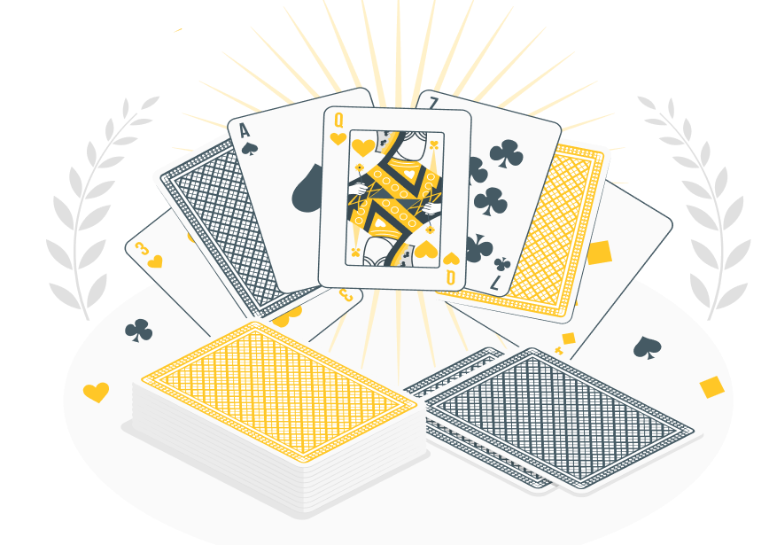

Juegos para
estimular la
mente
Descubre actividades sencillas diseñadas para trabajar la memoria, la atención y el lenguaje de forma entretenida.

¿Por qué son importantes los juegos?
Los juegos de estimulación cognitiva son una herramienta útil para mantener activas capacidades como la memoria, la atención, el lenguaje o el razonamiento. Realizados de forma regular y adaptados a cada persona, pueden favorecer el mantenimiento de estas funciones y proporcionar momentos de entretenimiento.
Estas actividades no sustituyen el tratamiento ni la atención de los profesionales sanitarios, pero sí pueden complementar el cuidado diario. Lo más importante es que se realicen en un ambiente tranquilo, respetando siempre el ritmo y las necesidades de cada persona.
Juegos destacados


Ordena la secuencia
Coloca los elementos en el orden correcto para trabajar la memoria y la lógica.
Comenzar →